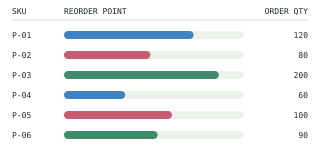

서버 포맷 · v0.4.0-preview.1
최적화 엔진에
최적화 엔진에
플레이북을 더하세요.
최적화 엔진의 입력과 제약, 분석 절차를 하나의 공개 포맷으로 묶습니다. 앱과 AI 에이전트는 같은 플레이북을 실행하고 결과를 검산할 수 있습니다.
OI Studio 샘플 데이터
내일 배송 경로를 짜 줘.
차량 적재량과 배송 시간창을 지키며 전체 비용을 줄입니다.
 그림 크게 보기
그림 크게 보기- 경로
- 3
- 배송지
- 10
- 미배정
- 0
다음 달 간호사 근무표를 만들어 줘.
휴일과 교대 간 휴식 시간을 지키며 업무를 고르게 배분합니다.
 그림 크게 보기
그림 크게 보기- 간호사
- 10
- 미충족 수요
- 0
- 규칙 위반
- 0
제품마다 재주문 기준을 정해 줘.
목표 서비스 수준에 맞춰 재주문 시점과 발주량을 결정합니다.


그림 크게 보기- 제품
- 12
- 보충 정책
- 12
- 계획 기간
- 30일
- 엔진 인터페이스
- 입력 형식과 단위, 목적함수, 엔진이 지원하는 제약을 명시합니다.
- 분석 플레이북
- 어떤 시나리오를 실행하고 어떤 지표를 같은 기준으로 비교할지 기록합니다.
- 결과 검산
- 실행 상태와 측정값을 반환해 별도의 검사기로 결과를 확인할 수 있게 합니다.
에이전트의 실행 순서
AI 에이전트 연결하기- 발견
엔진의 기능과 입력 형식을 읽습니다.
- 검증
누락된 입력을 요청하고 제약을 확인합니다.
- 실행
솔버 또는 선택한 플레이북을 실행합니다.
- 평가
실행 가능성과 비용, 검산 범위를 확인합니다.
프리뷰 다운로드
Core 0.1과 native v1 후보를 공개 소스로 제공합니다.